Catastrophe
Theory –
The Seven Elementary Catastrophes
Disclaimer: These notes were typed up as a first version for a PhD seminar I gave in Edinburgh on the 27/02/2025. These notes likely contain numerous typos, are wordy or inaccurate in places, and several LaTeX equations are not properly displayed. I will update the notes and fix the template soon.
In these notes, I will derive Thom’s seven elementary catastrophes (Thom (1972)), the main elements of catastrophe theory in the four-dimensional universe. Key works on catastrophe theory are Thom (1972), Arnol’d (1972) (amongst many of Arnol’d’s mathematical works on catastrophe theory) as well as various articles by Zeeman (1972-1977). An in-depth and mathematically rigorous survey of catastrophe theory can be found in Arnold et al. (1985). For applications of catastrophe theory, see also Arnold (1984); for beautiful illustrations of the various caustics in optics, we refer to Berry (1980). In the following, I will closely follow Saunders (1980) to derive catastrophe theory in the language familiar to physicists.
Fundamentals and terminology
Critical points and Morse’s lemma Consider a multivariate function f(x) of some state variables x. The function has a critical point at x0 if
∇x|x0 = 0
The critical point is non-degenerate if the Hessian ℋf(x) = ∂i∂jf(x) at the critical point is invertible, i.e. if
det (ℋf(x))|x0 ≠ 0
If det (ℋf(x))|x0 = 0, the critical point is degenerate. In the one-dimensional case, f(x), it is customary to call the a critical point n-fold degnerate for n derivatives higher than first-order vanishing at x0.
Catastrophe theory is the general classification of degenerate points and thus extends Morse’s classication of non-degenerate critical points. In the following, critical points will always taken to be at the origin x = 0.

For a function f(x) of a single variable and a non-degenerate critical point at the origin, Morse’s classification states that the critical point is a minimum if f″(0) > 0 and a maximum if f″(0) < 0. This classification extends to the multivariate case as follows: Consider a multivariate function f(x) with n state variables x and a non-degenerate critical point at the origin. Morse’s lemma states that there exists a diffeomorphism ψ which preservers the origin, ψ(0) = 0, under which the function near the non-degenerate critical point may be written as quadratic form
f(ψ(x)) = −x12 − x22 − … − xp2 + 1 + xp + 12 + … + xn2 ,
One calls p the (Morse) index of the singularity at x = 0, which counts the directions in which the function assumes a maximum. Written in this quadratic form, it is obvious that the Hessian ℋf is invertible at a non-degenerate critical point.
Corank Degenerate critical points were defined above by the condition det ℋf(x) = 0. Consider now a frame in which the Hessian is diagonal, so that diagonal second derivatives coincide with the eigenvalues, of the product of which is equal to the determinant. It is now a priori unclear how many of these eigenvalues vanish, corresponding to the orthogonal directions in which the Hessian is degenerate. The splitting lemma now states that to classify all the non-degenerate critical points, one only has to consider the essential variables, for which the vanishing of the second derivate cannot be removed by a suitable coordinate transformation. Their number is equal to the number of vanishing eigenvalues of ℋf(x). One refers to the number of essential variables as corank of the singularity.
In the following, I will assume the number of state variables for a function always to be equal to the number of essential variables, and hence use the terms interchangeably.
Structural stability Structural stability refers to the property of a function that the qualitative nature of the function does not change under small perturbations. Consider for example the polynomials in a single variable xn up to some order n. Structural stablility requires that the addition of any polynomial αxm with small α and m a positive integer and does not alter the critical nature of the function near the critical point (i.e. the origin). For m > n, this is trivially true; for m < n, the situation may change.

Consider for instance the function f(x) = x3 which has a degenerate critical point at the origin. This is function not structurally stable, as the addition of the term −αx with α > 0 would change the function’s qualitative nature by unfolding the critical point at the origin into a maximum and a minimum at $x = \{ \pm \sqrt{\frac{\alpha}{3}}\}$. However, the family of functions fu(x) = x3 + u2x2 + u1x1 + u0 is structurally stable, as the addition of any term xn up to n = 3 does not change the critical behaviour of the family of functions. The same argument applies to multivariate functions with several state variables x, where the function family fu(x) addition of any small perturbation in αh(x) with must be “recovered” in the function family.
Throughout these notes, the subcript u will be generally omitted for simplicity, and “families of functions” will be simply referred to as “functions”. It should be clear from the context that parameters may be involved.
At this point, note that we have been discussing polynomials only. This is actually general, as we are interested in the neighborhood of a critical point, where a function may be expanded in a Taylor series. The results we derived are therefore to be understood as classifying the k-jet jk(x) (Taylor series truncated at order k) of a generic analytic function that can be locally expanded as a polynomial.
Unfoldings The function families discussed above are also called unfoldings of the singularities. Consider again the bare singularity xn, for which the unfolding
fu(x) = xn + un − 1xn − 1 + … + u1x + u0
provides a structurally stable family of functions. Similarly, for a singularity in several state variables x, a possible unfolding is obtained by adding all monomials of lower order. For instance, for x3y2, all terms xkyl with k < 3 ∈ ℕ, l < 2 ∈ ℕ could appear in this function family.
An unfolding is said to be versal if it is structurally stable. Clearly, this is the case for the unfoldings proposed above. However, not all terms in these function families are actually necessary to ensure structural stability. For instance, for a singularity xn, it is readily seen that the terms un − 1xn − 1 and u0 do not actually change qualitative behavior of the function, as they may simply be absorbed in a shift of the origin and do not change the critical point. For more than one state variable, it is not so obvious which terms would be relevant, but the same argument applies.
An unfolding is said to be universal if it is structurally stable and has the least number of parameters. The term unfolding in the literature usually refers to universal unfolding of a caustic. In the univariate case, the singularity a xn is n − 2-fold degenerate and takes n − 2 unfolding parameters:
fu(x) = xn + un − 2xn − 2 + … + u1x
For singularities with two state variables, a few universal unfoldings will be derived below. Throughout these notes, the essential (state) variables will always be denoted as x, and the universal unfolding parameteres as u.
Finally, consider again the singularity x3, for which we can now write down the universal unfolding as
f(x) = x3 + ux
It is now clear that the term “unfolding” is chosen because the linear term reveals that the degenerate critical point actually is two coincident non-degenerate critical points, which are unfolded by varying u. Generally, universal unfoldings unfold n-fold degenerate critical points into n + 1 non-degenerate critical points.
Codimension The unfolding parameters in physical applications of catastrophe theory represent a target space, which is typically the (up to) 4 dimensions of our space-time. This means that stable geometric objects (rather than unstable transient events) in this target space can be defined by up to 4 constraint equations. The number of constraint equations is typically called the codimension of an object.
For the following list of seven elementary catastrophes, it suffices to define the codimension of a singularity as the number of parameters in the universal unfolding. This is because, as we have already seen for the univariate case f(x), the number of unfolding parameters is equal to a singularity’s degree of degeneracy. But saying that a critical point is n-fold degenerate is the same as saying that there n constraint equations, which constrain n higher derivatives to vanish.
For the case of more than one essential variable, the same argument holds, and the codimension is again equal to the number of unfolding parameters. We will see below that finding the universal unfoldings is more tricky, but we can already make another important observation: Consider a singularity of corank l, with l state variables (all of which are essential). The Hessian is symmetric, thus the vanishing of det ℋf requires that all the l(l + 1)/2 independent entries of the Hessian are zero. This means that there are l(l + 1)/2 constraint equations, and the singularity is therefore of codimension at least l(l + 1)/2. In words, a corank-l singularity is stabilised by at least l(l + 1) unfolding parameters. Corank-3 singularities therefore take at least 6 unfolding parameters, and are not stable in the 4-dimensional universe;l similary for higher coranks.
The corollary of the above is the following:
In the 4-dimensional universe, the full classification of stable degenerate critical points is given by the catastrophes of corank up to 2 and codimension up to 4.
Is is clear evident that the relevant corank-1 singularities are x3 through x6. It will also be shown the that there are three relevant corank-2 singularities.
The seven elementary catastrophes are given by:
x3 x4 x5 x6 x3 + y3 x3 − xy2 y4 + x2y
These are called the fold, cusp, swallowtail, butterfly and the hyperbolic, elliptic and parabolic umbilic.
For completeness, note that our simplistic definition of codimension ceases to be appropriate for catastrophes of higher-order catastrophes, where moduli spaces occur and the geometric and algebraic dimensions of the singularities become different.
Critical set, singular set and bifurcation set The normal forms of the caustics live in the space (x, u) of essential variables x and unfolding parameters u. In this space, there are a few objects of interest, which reveal the characteristic geometries of the various caustics in physical applications. The equilibrium or critical set ℳ is defined as the set of all points for which the function’s gradient vanishes,
ℳ = {x, u : ∇fu(x) = 0}
where the subscript u is again omitted. The singular set 𝒮 is defined as the set of all points within the critical set for which the Hessian is non-invertable,
𝒮 = {x, u ∈ ℳ : det ℋfu(x) = 0}
Both ℳ and 𝒮 live in space of essential variables and unfolding parameters (x, u). The bifurcation set ℬ is defined as the projection of the singular set into the space of unfolding parameters
ℬ = {u ∈ 𝒮}
ℬ i readily obtained by eliminating the state variables x from 𝒮 and ℳ.
Physical manifestation of catastrophes Before deriving the classification of all caustics, it is instructive to attach a physical meaning to the objects defined above. The various catastrophes generally arise in situations that map from a space of initial configurations, Lagrangian space, to a space of final configurations, Eulerian space. The essential variables x here take the role of Lagrangian space coordinates, while the unfolding variables u correspond to the Eulerian space coordinates. The latter usually chart the (up to) 4-dimensional space-time a physical experiment lives in.
The singularity germs describe the Lagrangian space configuration, e.g. a lensing or gravitational potential Φ(x). The critical set ℳ then corresponds the set of solutions to a governing equation (mapping equation, equation of motion, …) from this initial configuration, i.e. the set of all possible paths from x to u. This may be, for instance, the ensemble of light rays bent by a lensing potential, matter moving through a gravitational potential, or generic solutions to an initial value problem. The singular set 𝒮 then corresponds to the boundaries of those regions in the Eulerian space u where several solutions coincide; that is, where several Lagrangian positions x are mapped to the same final configuration u. The Lagrangian space is usually inaccessible, so that an experiment does not observe ℳ and 𝒮, but only the bifurcation set ℬ, which is the projection of 𝒮 into the observed Eulerian space u.
These concepts are is nicely illustrated with snapshot of a 2D mesh simulation for cosmological structure formation; for more details, see my research page. An observer would observe the Eulerian space in the right panel, i.e. the density of particles at the final positions at some time t. The observer does not a priori know whence these particles came from, as the Lagrangian space is not observable. The bifurcation set in Eulerian space is characterised by (infinite) density spikes. Our knowledge of the simulation allows us to draw the evolving mesh from Lagrangian space, and correctly identify the bifurcation set as the set of Eulerian points bounding the multistream regions where several incoming paths overlap.
The seven elementary catastrophes
Having discussed all the needed fundamental notions, I will discuss the seven elementary catastrophes and their characteristic geometries.
Corank-1 catastrophes: the cuspoids
We will first discuss the the corank-1 catastrophes, which are known as the cuspoids, after the archetypical cusp catastrophe occuring in this family of singularities.
We have already seen above that the universal unfoldings are given in the form f(x) = xn + un − 2xn − 2 + … + u1x. It is thus straightforward to derive the equilibtrium, singular and bifurcation sets and discus their geometries.
A2 fold catastrophe
Some properties of the fold catastrophe x3 were already discussed above. The universal unfolding is
$$ \boxed{f_{A_2}(x) = x^3 + u x} $$
with a single unfolding parameter u. The equilibrium and singular set are readily obtained:
ℳA2 = {(x, u) : 3x2 + u = 0}
𝒮A2 = {(x, u) : 6x = 0}
Elimination of x yields the bifurcation set
ℬA2 = {u : u = 0}
The bifurcation set in this case is just a single point in the unfolding space. This is exactly what we discussed above regarding the structural stability of the cubic polynomial: As the unfolding parameter u is varied through 0, the qualitative nature changes as the degenerate critical point is unfolded into a pair of non-degenerate critical points (maximum and minimum).
A3 cusp catastrophe
Next in the list of co-dimension-1 caustics is the cusp catastrophe x4. The cusp has co-dimension 2, and the universal unfolding is
$$ \boxed{f_{A_3}(x) = x^4 + u x^2 + v x} $$
with two unfolding parameters (u, v). The equilibrium and singular set are given by
ℳA3 = {(x, u, v) : 4x3 + 2ux + v = 0}
𝒮A3 = {(x, u) : 12x2 + 2u = 0}
Eliminating x yields the bifurcation set in the unfolding parameters
ℬA3 = {(u, v) : 8u3 + 37v2 = 0}
The equilibrium set (yellow) and singular set (red) are shown in the left panel of the figure below. The bifurcation set is the projection into the space of unfolding parameters (u, v) shown on the right-hand side.

For clarity, the following figure also shows a rotating view of the equilbrium surface

The equilibrium and bifurcation set of the cusp catastrophe reveals a generic geometric property of all the caustics: The equilibrium surface is a smooth surface in the space (x, u), but the bifurcation set is not a smooth line in the unfolding space (u). More formally, the equilibrium set is always a manifold, whereas the bifurcation set is not. In the case of the cusp, ℬ is diffeomorphic, but not homeomorphic, to ℝ1, meaning that ℬ cannot be smoothly deformed to ℝ1 without flattening the non-differentiable point at the origin.
As was mentioned above, the equilibrium set typically represent the physical solutions to a boundary problem, with x being the unobservable Lagrangian space, and u being the observed Eulerian space. For the cusp, we can see that there are regions of 3 overlapping solutions, which are bounded the by the cusp point and the fold lines emerging from it. These are known as multi-image regions in lensing applications, or multistream regions is cosmological structure formation and are nicely illustrated in the following physical applications.
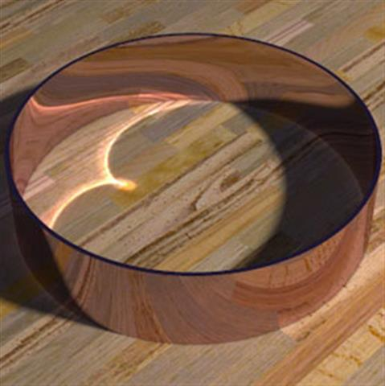
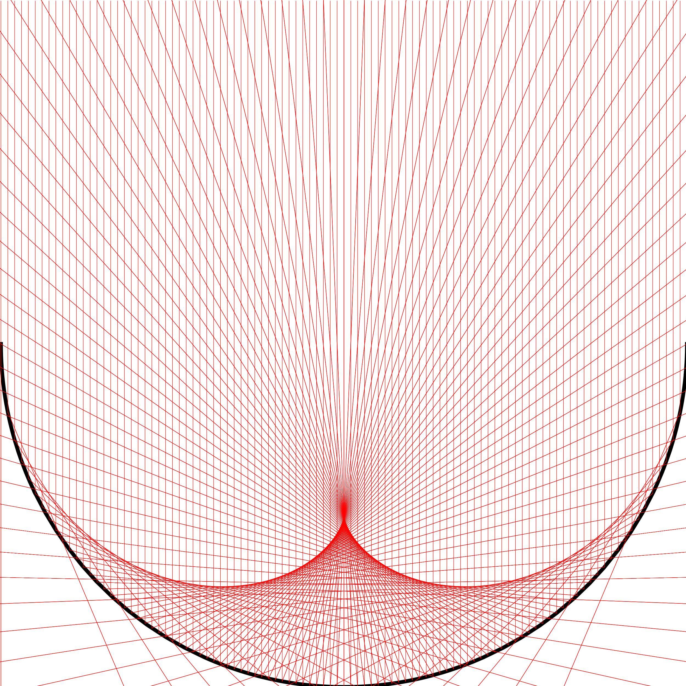

A4 swallowtail catastrophe
The next corank-1 catastrophe is the swallowtail x5, which has co-dimension 3 with the universal unfolding
$$ \boxed{f_{A_4}(x) = x^5 + u x^3 + v x + w} $$
The equilibrium and singular set are given by
ℳA4 = {(x, u, v, w) : 5x4 + 3ux2 + 2vx + w = 0}
𝒮A4 = {(x, u, v) : 20x3 + 6ux + 2v = 0}
Eliminating x gives the two-dimensional bifurcation surface in the space of unfolding parameters (u, v, w):
ℬA4 = {(u, v, w) : −81u4w + 27u3v2 + 360u2w2 − 540uv2w + 135v4 − 400w3 = 0}
The equilibrium set ℳA4 is now a 3-dimensional volume in the 4-dimensional space (x, u, v, w). To visualise the characteristic swallowtail geometry, it is instructive to plot slices of the equilibrium set for varying values of u, as done in the figure below.

As in the cusp catastrophe, the equilibrium surface (i.e. the slice for fixed u) folds over itself, so that the projection into the (v, w)-plane yields a multi-image regions with overlapping pieces of the equilibrium surface. The swallowtail caustic unfolds by forming a pocket in the equilibrium surface, which is bounded by two cusp points and three fold lines. This becomes clearer in the animation below, which visualises the equilibrium set for fixed u. The bifurcation set ℬA4 is a two-dimensional surface in the 3-dimensional unfolding space (u, v, w), and can be readily visualised.
 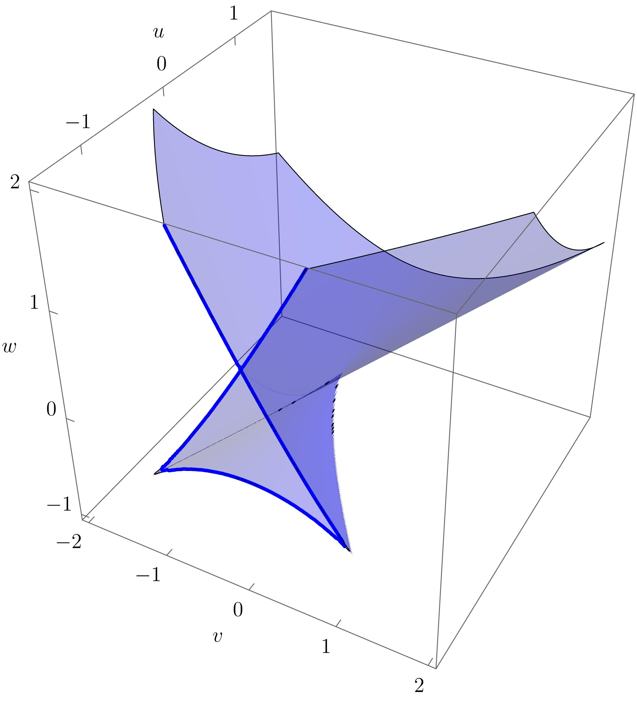
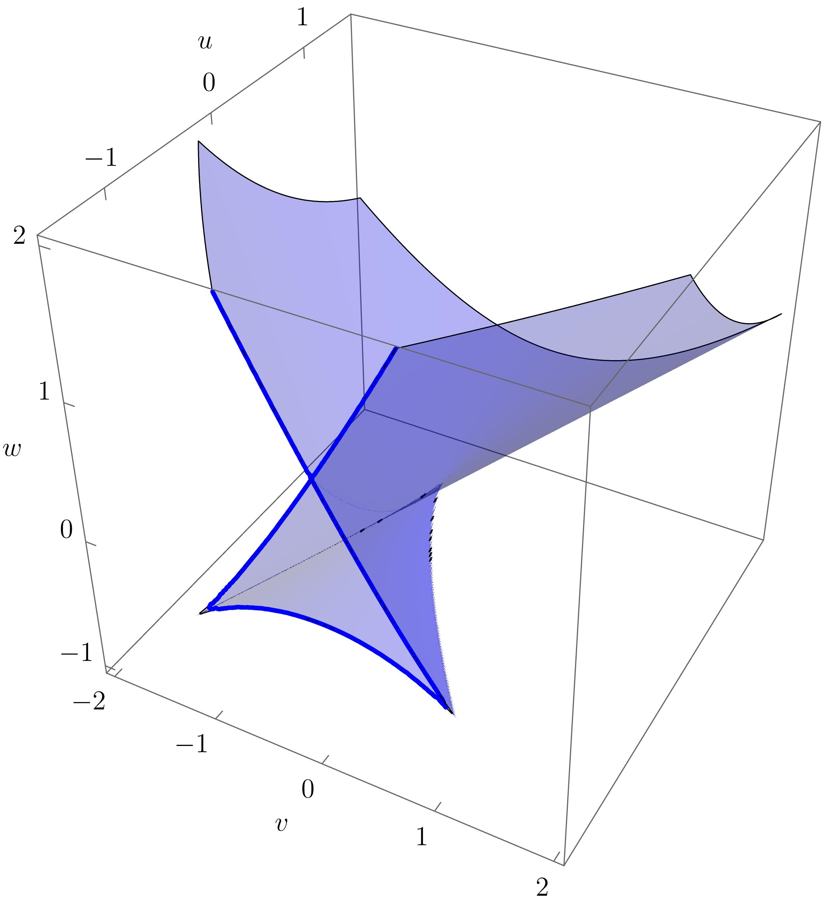
In physical applications, the unfolding parameters (v, w) may correspond to the spatial coordinates of a two-dimensional target space, while u corresponds to time coordinate or other control parameter that controls the “strength” or “growth” of the swallowtail caustic. An observer would therefore typically see “growing” slices of ℬA4 for varying u. This becomes apparent when continuously varying u and plotting the equilibrium set slices along with the corresponding bifurcation set slices:

This is illustrated in the following the figures, where the correspondence with the animation above becomes apparent.
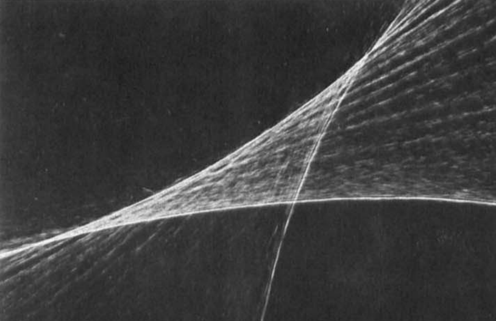
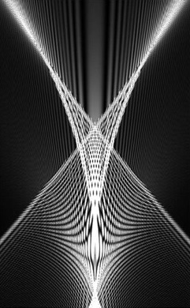

The swallowtail catastrophe in particular has attracted attention not only from scientists, but also in the fine arts. And example is Salvador Dalí’s last painting, “The swallow’s tail” (1983), which Dalí created in honour of the aesthetics of Thom’s theory of catastrophes and their morphogenesis. More recently, engineer and author Allan McRobie has interpreted catastrophe theory as the theory of “beautifully curved” surfaces, which appear ubiquitously in the organic world, and are found to appeal more to the innate human understanding of beauty than the simple shapes of solid geometry possibly could. An example of this is shown in the right panel of the figure below, where a woman’s curved torso is aesthetically forming the equilibrium surface of the swallowtail catastrophe.
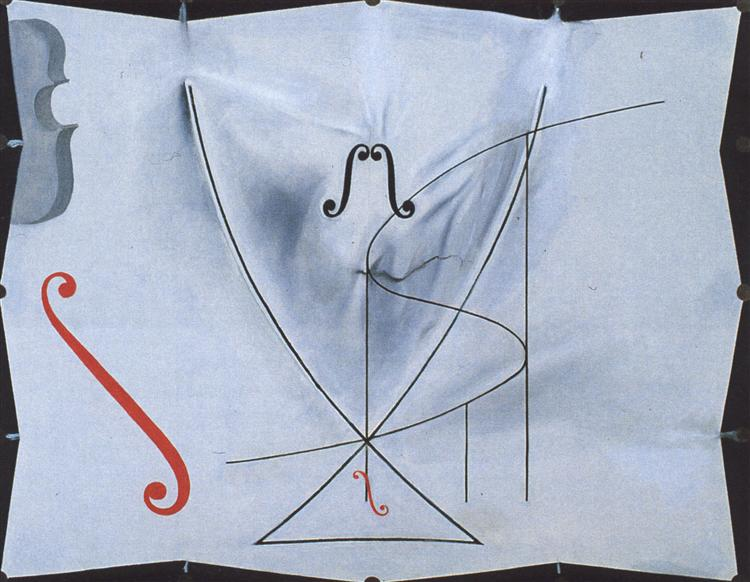
A5 butterfly catastrophe
The last in the list of the corank-1 cuspoid singularities is the butterfly catastrophe x6 which is of co-dimension 4 with the universal unfolding
$$ \boxed{f_{A_5}(x) = x^6 + t x^4 + u x^3 + vx^2 + wx} $$
The equilibrium and singular sets are given by
ℳA5 = {(x, t, u, v, w) : 4tx3 + 3ux2 + 2vx + w + 6x5 = 0}
𝒮A5 = {(x, t, u, v, w) : 12tx2 + 6ux + 2v + 30x4 = 0} ,
thus yielding the (somewhat more complicated) bifurcation set
ℬA5 = {(t, u, v, w) : −13824t5w2 + 13824t4uvw − 4096t4v3 − 3456t3u3w + 1152t3u2v2 + 86400t3vw2 − 89100t2u2w2 − 80640t2uv2w + 24576t2v4 + 102060tu3vw − 31104tu2v3 + 202500tuw3 − 144000tv2w2 − 19683u5w + 6561u4v2 − 182250u2vw2 + 172800uv3w − 36864v5 − 84375w4 = 0}
The equilibrium set is now 4-dimensional in the 5-dimensional space (x, t, u, v, w). Similarly, the bifurcation set is now a 3-dimensional volume in the 4-dimensional unfolding space (t, u, v, w). Visualisations of the full structure are therefore difficult. Yet, intuition about the butterfly geometry can be gained by considering slices for fixed t, u. The following figure shows the equilibrium set slice along with corresponding bifurcation set slice for fixed (t, u).

 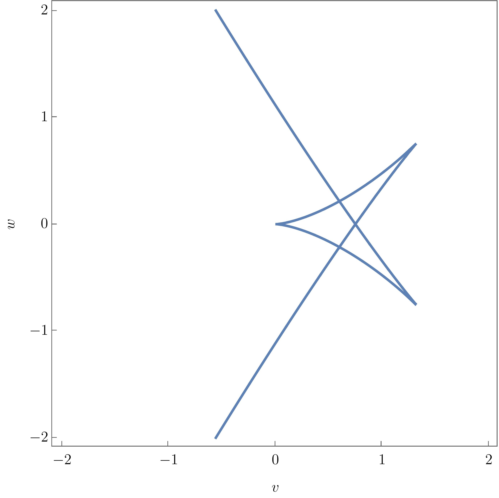
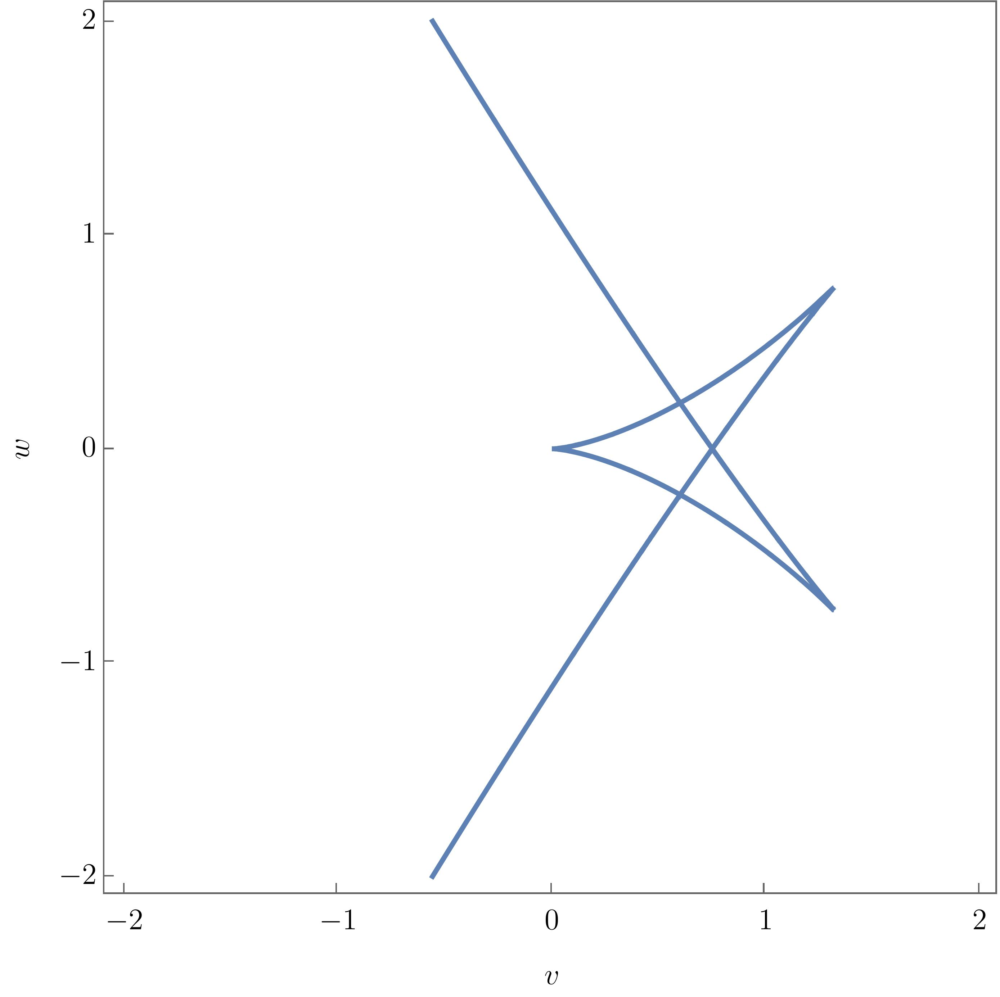
Again, more intution may be gained by smoothly varying the parameters (t, u). This is done in the following animation, where (t, u) are varied along a circle about the origin. Both the equilibrium set slice and the corresponding bifurcation set slice are shown in the middle and right panels. The animation nicely illustrates how the butterfly catastrophe unfolds into lower catastrophes, namely swallowtails, cups and connecting fold lines, at different points in the unfolding space.

Corank-2 catastrophes: the umbilics
The corank-1 catastrophes were trivial to derive from the structural stability of the canonical xn singularity. For the corank-2 catastrophes, more work is needed, and we again follow Saunders (1980) for the detailed derivation.
To investigate the non-degenerate critical points of corank 2, let us start the derivation from the 3-jet of a function with two variables (x, y) such that the 2-jet identically vanishes:
j3(x, y) = (a1x + b1y)(a2x + b2y)(a3x + b3y)
Our task now is to find suitable diffeomorphisms to bring this 3-jet into (one possible choice of) the distinct forms for the canonical singularities. The proposed factorised form of the 3-jet is particularly nice, as the 3 corank-2 singularities turn out to correspond to three possible cases for roots the jet polynomial, namely (i) real distinct roots, (ii) complex distinct roots and (iii) one pair of repeated real roots. We now go through these cases and discuss their geometries.
D4+ hyperbolic umbilic
Consider first the case of complex roots. Because complex roots of a real polynomial appear in pairs, we can conclude w.l.o. generality that (a3 = ā2, b3 = b̄2) and write j3(x, y) = (a1x + b1y)((ℜ(a2)x + ℜ(b2)y)2 + (ℑ(a2)x + ℑ(b2)y)2). Using two linear transformations (diffeomorphisms), we can write
j3(x, y) ∼ (ax + by)(x2 + y2) ∼ x3 + xy2 ∼ x3 + y3
The first transformation used was (x ↦ ax + by, y ↦ bx − ay), and the second diffeomorphism was found by writing (x + y)3 + (x − y)3 = 2x3 + 6xy2.
The form η(x, y) = x3 + xy2 is the one used by Arnol’d (1972), and we will see below that it is parallel to the canonical form of elliptic umbilic. For physical applications, the form η(x, y) = x3 + y3 is generally found to be more useful, and we therefore take the canonical form of the form of the D4+ singularity to be
$$ \boxed{D_4^+: \quad \eta(x,y) = x^3 + y^3} $$
We are now interested in the universal unfolding, which we will find using Siersma’s trick. One starts by considering a versal unfolding g(x, y) of the canonical singularity by adding all possible monomials in x, y:
g(x, y) = η(x, y) + ∑i, jαi, jxixj
Clearly, this is not the universal unfolding as several of the added terms can be eliminated by a suitable diffeomorphism, just as xn − 1 was eliminated for the xn-singularities above. Consider now an infinitesimal diffeomorphism Ψ : {x ↦ x + ψ(x, y), y ↦ y + χ(x, y)} with some polynomial functions ψ(x, y), χ(x, y). This infinitesimal diffeomorphism transforms the canonical singularity to
$$ \Psi : \eta(x,y) \mapsto \eta(x,y) + \psi(x,y) \frac{\partial \eta(x,y)}{\partial x} + \chi(x,y) \frac{\partial \eta(x,y)}{\partial y} $$
This implies that a suitable choice of the functions ψ(x, y), χ(x, y) can reproduce any terms in g(x, y) that are multiples of either $\frac{\partial \eta}{\partial x}$ or $\frac{\partial \eta}{\partial y}$. These terms can therefore not be part of the universal unfolding, and can be eliminated. The remaining terms may or may not be the terms in the universal unfolding.
This is visually illustrated by arranging all monomials in a triangle such that any term is a multiple of its upper neighbors. One now draws a shadow from the terms ∂xη and ∂yη to exclude their multiples. For the D4+ singularity, these are ∂xη ∼ x2 and ∂yη ∼ y2.

Here, we find three unshaded terms x, y, xy which may appear in the universal unfolding. But the D4+ catastrophe has codimension 3 (the least codimension for corank-2 singularities), and we therefore conclude that we have obtained universal unfolding with these three terms:
$$ \boxed{f_{D_4^+}(x) = x^3 + y^3 + w x y - u x - v y} $$
From here on, we can proceed as before. The equilibrium set ℳD4+ of the elliptic umbilic caustic is given by the two simultaneous equations
ℳD4+ = {(x, y, u, v, w) : −u + wy + 3x2 = 0 − v + wx + 3y2 = 0}
and the singular set 𝒮D4+ is given by
𝒮D4+ = {(x, y, u, v, w) : 36xy − w2 = 0}
Eliminating the essential variables (x, y) yields the bifurcation set ℬD4+
ℬD4+ = {(u, v, w) : −u4 + 8u3w2 − 2u2v2 − 18u2w4 − 24uv2w2 − v4 − 18v2w4 + 27w8 = 0}
The bifurcation set ℬD4+ is a 2-dimensional surface in the unfolding space (u, v, w), and may therefore be readily visualised. In physical application, the parameter w typically corresponds to a time or other strength parameter, specifying the growth of the caustic. It is therefore most instructive to also plot a slice of the bifurcation set for fixed u, as this is the configuration that may be observed e.g. in optical experiments at a given time.

More intuiton about the arguably beautiful purse-like folding of the bifurctation is obtained by rotating the surface

While we have now shown the characteristic geometry of the hyperbolic umbilic caustic as may be observed in experiments, it is worthwhile to also investigate the equilibrium set ℳD4+. Here, this is a 3-dimensional volume. If one again considers a slice for fixed w (i.e. physically considers a fixed-time slice), the 2-dimensional ℳD4+-slice may be readily visualised e.g. by eliminating the state variable x (i.e. projecting into the space (y, u, v)).

The rotating view of the equilibrium surface beautifully illustrates the argument brought forward above, namely that the equilibrium and singular sets of the catastrophes are smooth manifolds, with the singular structure in the bifurcation sets miraculously arising from projections “along the line of sight”.
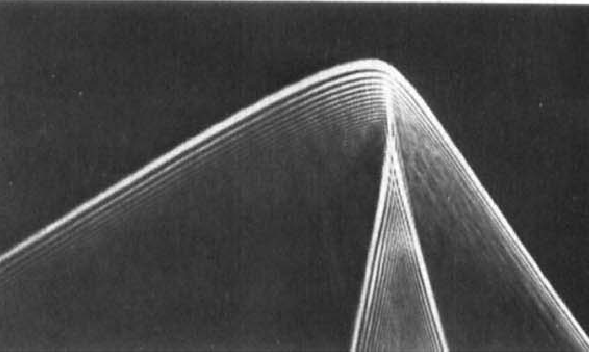

D4- elliptic umbilic
Consider now the case of three real and distinct root, i.e. the coefficient pairs (ai, bi) are distinct. One can then write the 3-jet as
j3(x, y) ∼ (ax + by)xy ∼ (x + y)xy ∼ x(x2 − y2) ,
where we first used the diffeomorphism (x ↦ a2x + b2y, y ↦ a2x + b2y) and then (x ↦ x + y, y ↦ x − y).
We thus take the canonical form of the D4− singularity to be
$$ \boxed{D_4^-: \quad \eta(x,y) = x^3 - x y^2} $$
and the nomenclature D4± in Arnold’s form x3 ± xy2 is evident.
We now again find the universal unfolding Siersma’s trick. The relevant derivatives are ∂xη ∼ x2 − y2 and ∂yη ∼ xy. While the latter has an obvious place in the diagram, the former does not. One can, however, use these terms to write x3 = x(x2 − y2) + y(yx) and similary for y3, so that both x3 and y3 may be eliminated.

There are 4 unshaded terms, x, y, x2 and y2 left. But the D4− singularity again has codimension 3, so one further variable must be eliminated. If one introduces a symmetric unfolding term x2 + y2, one can easily eliminate both x2 and y2 by writing 2x2 = (x2 + y2) + (x2 − y2) and similarly for y2. Note that one could equivalently use x2 or y2 to eliminate the other respectively, but the symmetric form is generally found more useful. We therefore write the universal unfolding as
$$ \boxed{f_{D_4^-} = 1/3 x^3 - x y^2 + w (x^2 + y^2) - u x + v y} $$
The equilibrium set ℳD4− of the elliptic umbilic caustic is given by the two simultaneous equations
ℳD4− = {(x, y, u, v, w) : −u + 2wx + x2 − y2 = 0 v + 2wy − 2xy = 0}
and the singular set 𝒮D4− is given by
𝒮D4− = {(x, y, u, v, w) : 4w2 − 4x2 − 4y2 = 0}
Eliminating the essential variables (x, y) yields the bifurcation set ℬD4−
ℬD4− = {(u, v, w) : −u4 + 8u3w2 − 2u2v2 − 18u2w4 − 24uv2w2 − v4 − 18v2w4 + 27w8 = 0} ,
which is a two-dimensional surface the three-dimensional unfolding space (u, v, w). The full bifurcation set ℬD4− may be readily visualised in the figure below

Clearly visible is the characteristic triangular geometry, with the elliptic umbilic point unfolding into three cusp points connected by fold lines. As for the hyperbolic umbilic, it is again instructive to plot a slice of the equilibrium set ℳD4− for fixed w, this time by projecting into (x, u, v). The following animation beautifully illustrates how the equilibrium is a smooth surface, with the triangular structure arising from the projection of the singular set along the line of sight.

The characteristic triangular geometry of the elliptic umbilic caustic is readily observed in physical applications.
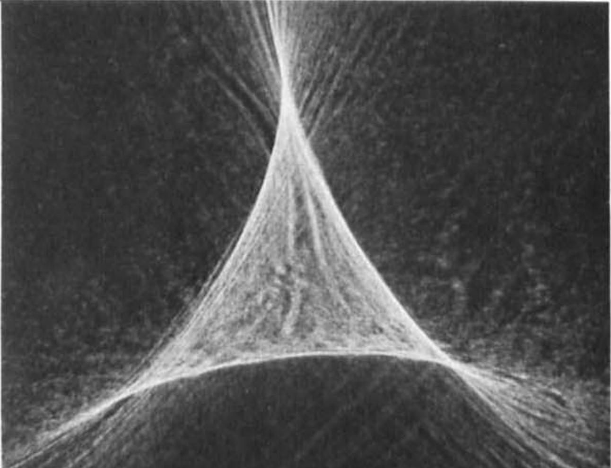
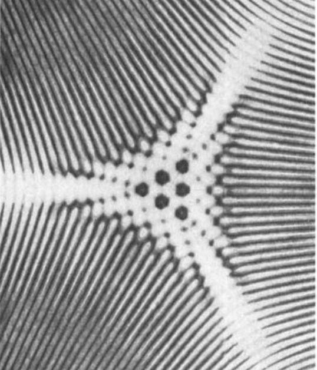

D5 parabolic umbilic
The parabolic umbilic corresponds to the case of a pair of repeated roots. One can write
j3(x, y) ∼ (a1x + b1y)2(a3x + a3y) ∼ x2y
The equality of the repeated roots gives an additional constraint equation, thus raising the codimension to 4. One can show that this requires one to consider the 4-jet
j4(x, y) = x2y + h(x, y)
to obtain the canonical form of the singularity. Writing h(x, y) = α1y4 + α2y3x + α3y2x2 + α4xy3 + α5x4, one now wants to find a diffeomorphism Ψ : {x ↦ x + ψ(x, y), y ↦ y + χ(x, y)} that does not alter the 3-jet to and simplify the 4-jet. It can be shown that one can choose $\psi(x,y) = -\frac{1}{2} \alpha_2 y^2, \chi(x,y) = -(\alpha_3 y^2 + \alpha_4 x y + \alpha_5 x^2)$ to obtain j4(x, y) ∼ x2y + y4, which we take as the canonical form of the D5 singularity:
$$ \boxed{D_5: \quad \eta(x,y) = y^4 + x^2 y } $$
Note that a further degeneracy in the 3-jet or the requirement of a higher term (y^4) vanishing in the 4-jet would raise the codimension to 4. The D5 singularity is therefore the last in the list of the catastrophes up to codimension 4.
The universal unfolding is again found by considering ∂xη ∼ xy and ∂yη ∼ x2 + y3, where the former has a place in the diagram. One can draw further shadows from x3 = −y2(xy) + x(x2 + y3) and y4 = y(x2 + y3) − x(xy).

This leaves 5 unshaded terms x, y, x2, y2, y3 of which y3 may be eliminated from a combination of x2 and x2 + y3. We therefore take the universal unfolding of the D5 singularity to be.
$$ \boxed{f_{D_5} = y^4 + x^2 y + w x^2 + t y^2 - u x - v y} $$
The equilibrium set ℳD5 is given by
ℳD5 = {(x, y, t, u, v, w) : = −u + 2wx + 2xy = 0 − v + x2 + 2ty + 4y3 = 0}
and the singular set 𝒮D5 is
𝒮D5 = {(x, y, t, u, v, w) : 4tw − 4x2 + 4ty + 24wy2 + 24y3 = 0}
Finally, the bifurcation set ℬD5 is obtained as
ℬD5 = {(t, u, v, w) : 1889568u5 − 524880u4w2 − 7558272u3vw2 + 58320u3w4 + 1259712u2vw4 + 839808tu2w5 − 3240u2w6 − 69984uvw6 − 93312tuw7 + 90uw8 + 1296vw8 + 2592tw9 − w10 + 5184w11 = 0}
The geometry of the parabolic umbilic is arguably the most complicated of all the objects discussed in these notes. Note that the equilibrium set ℳD5 is 4-dimensional hypersurface in the 6-dimensional (x, u) and the bifurcation set ℬD5 is a 3-dimensional volume in the space of unfolding parameters. Intuition may be gained by plotting slices of the bifurcation set for varying (t, u), as in the following figure

Interestingly, the parabolic umbilic exhibits quite distinct geometries for different parameter values (t, u), some of which are typically displayed in textbooks. More intuition may be gained by plotting the bifurcation sets for smoothly varying values $(t,u), as done in the following animation.

Here, one nicely observes the different configurations which Thom (1972) already described in his very original work on morphogenesis. As one crosses (1, 0), the beak-to-beak configuration turns into two swallowtails, which in turn disappear and turn into a dovetail configuration. At (0, −1), an isolated bifurcation point at the origin, which grows first into a lisp configuration and then a hyperbolic umbilic focus of maximal extend at about (...). The triangle then shrinks into an elliptic focus which eventually disappears. A piercing configration then forms around (−0.2, 0.8), out of which the beak-to-beak emerges again.
It is, however, difficult to go beyond the shown (t, u) slices and understand the morphogenesis of the bifurcation set, and even more the equilibrium set, in the whole unfolding space.
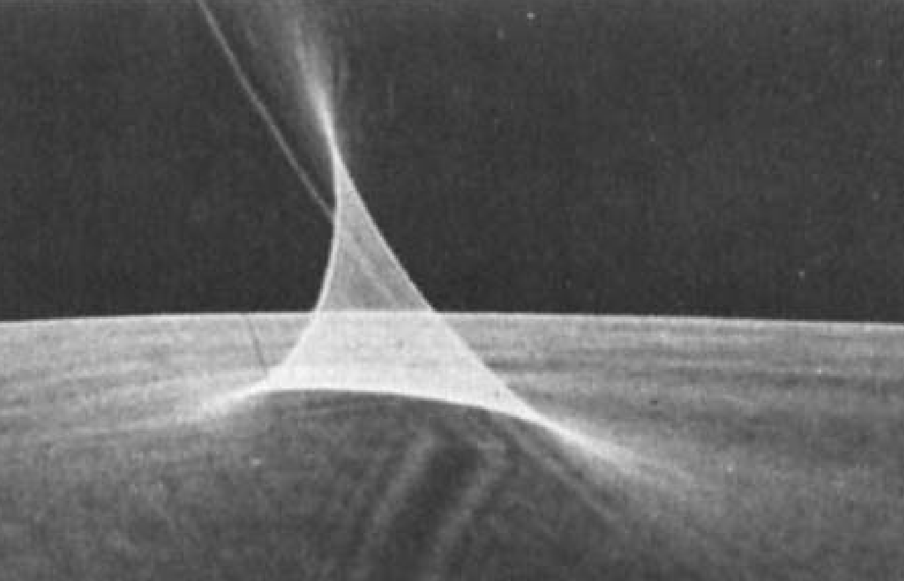 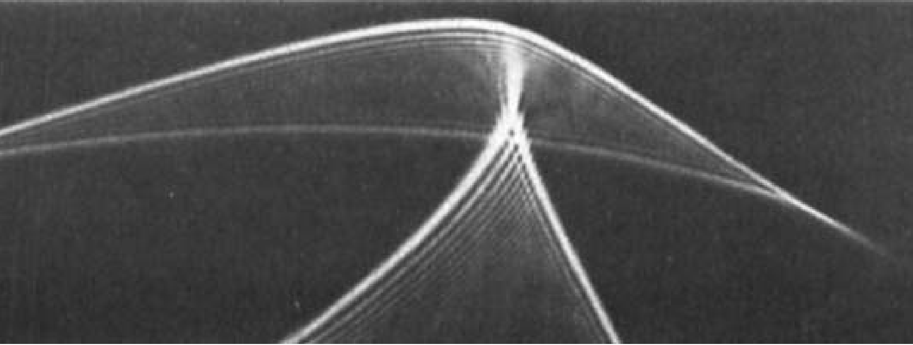
Summary of the seven elementary catastrophes
The derivation of the seven elementary catastrophes is now complete. The results are summarised below:
| name | symbol | singularity | unfolding | corank | codimension |
|---|---|---|---|---|---|
| fold | A2 | x3 | x3 + μ1x | 1 | 1 |
| cusp | A3 | x4 | x4 + μ1x2 + μ2x | 1 | 2 |
| swallowtail | A4 | x5 | x5 + μ1x3 + μ2x2 + μ3x | 1 | 3 |
| butterfly | A5 | x6 | x6 + μ1x4 + μ2x3 + μ3x2 + μ4x | 1 | 4 |
| ell. umbilic | D4− | x3 − xy2 | $\frac{1}{3} x^3 - x y^2 + \mu_1 (x^2 + y^2) - \mu_2 x + \mu_3 y$ | 2 | 3 |
| hyp. umbilic | D4+ | x3 + y3 | x3 + y3 + μ1xy − μ2x − μ3y | 2 | 3 |
| par. umbilic | D5 | y4 + x2y | y4 + x2y + μ1x2 + μ2y2 − μ3x − μ4y | 2 | 4 |
Having discussed the characteristic geometries of the seven elementary catastrophes, I would like to conclude this section with a picture of work. Naum Gabo’s intriguing “Linear Construction in Space No. 2” (1958). The sculpture shows a smooth and intricately curved structure made solely from organic shapes. An observer sees the structure as if were projected along their line of sight, and the shapes that are folding over the projected direction are observed as caustic points, thus beautifully illustrating the mathematical and physical concepts we have discussed above.

Beyond the seven elementary catastrophes
Having completed the discussion of the seven elementary caustics, the reader may be tempted to continue reading into catastrophe theory by mentioning two interesting properties of higher catastrophes.
Firstly, we have shown in detail how the unfoldings codimension-4 singularities are derived. The very same methods can be applied to derive the canonical forms and unfoldings of the codimension-5 singularities, which are well known in the literature (e.g. x7 is known as the wigwam catastrophe). It is obvious that the corank-1 cuspoids, i.e. the xn singularities, form an infinite family, of which the universal unfoldings are evident. It is also intuitive that the corank-2 umbilics form an infinite family, even though the canonical forms and unfoldings are much less clear in this case. Arnol’d has demonstrated that these infinite families, along with three “exceptional” higher-codimension catastrophes, can be classified using the Coxeter-Dynkin diagrams; that is, the catastrophes admit an ADE classification. This finally motivates the use of the symbols An for the cuspoids and Dn for the umbilics, which we had left uncommented above. I will write separate notes on Picard-Lefschetz theory and the ADE classification and of higher catastrophes soon.
The second curious property of higher-codimension catastrophes can be introduced by considering a general 4-jet such that the 3-jet identically vanishes
j4(x, y) ∼ (a1x + b1y)(a2x + b2y)(a3x + b3y)(a4x + b4y)
Assuming real and non-repeated roots of the quartic polynomial, the singularity is of codimension 8. One can now proceed as above to find a possible canonical form. But if one writes
j4(x, y) ∼ xy(ax + by)(px + qy) ∼ xy(x + y)(sx + ty) ∼ xy(x + y)(x + λy) ,
there remains a free parameter λ that cannot be absorbed by a suitable diffeomorphism. One therefore does not obtain a single canonical form, but a 1-parameter family of castrastrophes that cannot be transformed into each other through diffeomorphism. These moduli spaces are a generic property of higher catastrophes.